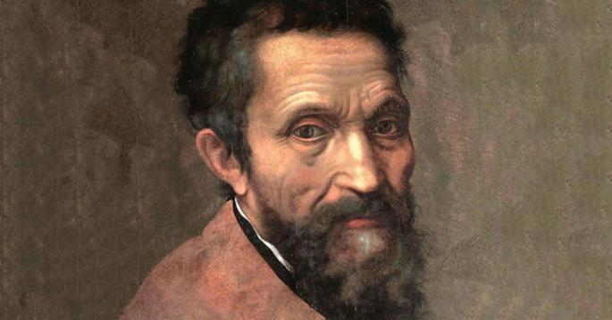

David Michelangelo

Michelangelo (1475-1564) foi um pintor, escultor e arquiteto italiano. É considerado um dos
maiores representantes do Renascimento Italiano. "Pietá", "O Juízo Final", "Moisés", "Davi" e "A Abóbada da
Capela Sistina" são algumas das obras que eternizaram o artista.
Michelangelo de Lodovico Buonarroti nasceu em Caprese, na província de Arezzo, nas proximidades de Florença,
Itália, no dia 6 de março de 1475. Filho de Lodovico Buonarroti e de Francesca desde pequeno só se interessava
em desenhar. Com 13 anos começou a estudar pintura na oficina dos irmãos Domenico e Davi Ghirlandaio, em
Florença. Em 1489, é convidado por Lourenço para estudar na Academia dos Jardins dos Medici. Em 1492, conclui
sua primeira escultura “Madona da Escada”.
Ainda em 1492, conclui a “Batalha dos Centauros”, “Hercules”, para Pierro de Medici, e o “Crucifixo”, para o
Convento do Espírito Santo. Nesse mesmo ano, após a morte de Lourenço, Michelangelo vai para Bolonha, onde
encontra hospitalidade junto a um nobre bolonhês. Em 1494 conclui para a “Arca de São Domingos”, um “Angelo
Reggicero” e as estátuas de “São Procolo” e “São Petrônio”.
Ainda em 1497, o cardeal francês Jean Bilheres, embaixador do rei da França na corte papal, contrata
Michelangelo par esculpir uma escultura de mármore para sua capela na Basílica de São Pedro. O artista é enviado
para Carrara para escolher o melhor mármore e em bloco único para a obra “Pietà”, que é finalizada em 1499.